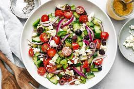

Salad

Description
Salad is a healthy and refreshing dish that can be enjoyed on its own or as a side. It is packed with nutrients and offers a variety of flavors and textures.
Salads are versatile and can be customized with your favorite ingredients.
Ingredients
- 2 cups mixed salad greens
- 1 cucumber, sliced
- 1 tomato, diced
- 1/2 red onion, thinly sliced
- 1/4 cup sliced black olives
- 1/4 cup crumbled feta cheese
- 2 tablespoons extra virgin olive oil
- 1 tablespoon balsamic vinegar
- Salt and pepper to taste
Instructions
- Wash the salad greens thoroughly and dry them using a salad spinner or paper towels. Place the greens in a large salad bowl.
- Add the sliced cucumber, diced tomato, thinly sliced red onion, sliced black olives, and crumbled feta cheese to the bowl.
- Drizzle the extra virgin olive oil and balsamic vinegar over the salad ingredients.
- Season with salt and pepper according to your taste preferences.
- Toss the salad gently to combine all the ingredients and ensure they are evenly coated with the dressing.
- Taste the salad and adjust the seasoning if needed.
- Serve the salad immediately as a refreshing and healthy side dish.